1 Persiapan PC & jaringan
Dilakukan sekali, sebelum memasang.
Delta Billing HuB dipasang di satu PC Windows di rental (disebut PC server). Tablet/HP kasir dan TV cukup membuka alamat PC ini lewat Wi-Fi/LAN yang sama — tidak perlu memasang apa pun di tablet.
| Minimal | Disarankan | |
|---|---|---|
| Windows | Windows 10 64-bit | Windows 10 / 11 64-bit, update terbaru |
| Prosesor | 2 core (Core i3 / Ryzen 3 lama) | 4 core atau lebih |
| RAM | 4 GB | 8 GB |
| Penyimpanan | 3 GB kosong | SSD, 10 GB kosong (untuk backup harian) |
| Jaringan | Satu jaringan dengan tablet & TV | Kabel LAN + IP tetap |
| Internet | Tidak wajib untuk kasir & TV. Dipakai untuk WhatsApp, pembayaran online, sinkron cloud & cek update. | |
Checklist sebelum mulai
- Login Windows dengan akun Administrator.
- IP tetap untuk PC server. Di pengaturan router, buat DHCP reservation untuk PC ini
(mis.
192.168.1.10). Kalau IP berubah-ubah, tablet & TV kehilangan alamat server. - Opsional tapi disarankan: di BIOS aktifkan Restore on AC power loss / Power on supaya PC menyala sendiri setelah listrik padam.
- Matikan mode Sleep PC (Settings → System → Power → Sleep: Never).
- Siapkan: nama rental, nama cabang, email & password owner, PIN 4–6 angka, daftar unit & harga, daftar menu F&B.
2 Pasang aplikasi (installer)
Di PC server · ±5–10 menit
- Buka github.com/deindr4/billing-rental-ps/releases/latest
dan unduh
BillingPS-Setup-<versi>.exe. - Klik dua kali file tersebut → pilih Yes saat Windows meminta izin Administrator. Bila muncul Windows protected your PC, klik More info → Run anyway.
- Ikuti wizard:
Halaman Isi Folder Biarkan C:\BillingPS.Jenis pemasangan Pasang baru (data kosong). Pilih Pulihkan dari file backup hanya saat pindah PC. Data rental Nama rental & nama cabang (bisa diubah nanti). Akun owner Nama, email, password (min. 8 karakter) dan PIN 4–6 angka untuk menyetujui aksi penting. Zona waktu WIB / WITA / WIT sesuai lokasi. Port web Biarkan 80. Ganti (mis. 8000) hanya bila port 80 dipakai program lain. - Klik Install dan tunggu tahap Menyiapkan database, aplikasi & layanan selesai (beberapa menit).
- Di akhir muncul Data login: email, password, PIN, akun super admin dan alamat aplikasi
(mis.
http://192.168.1.10). Foto atau catat — password tidak disimpan di file mana pun. - Centang Buka Delta Billing HuB sekarang → Finish. Ikon Delta Billing HuB dan Delta Billing HuB Monitor (status & restart layanan, backup darurat) juga ada di Desktop.
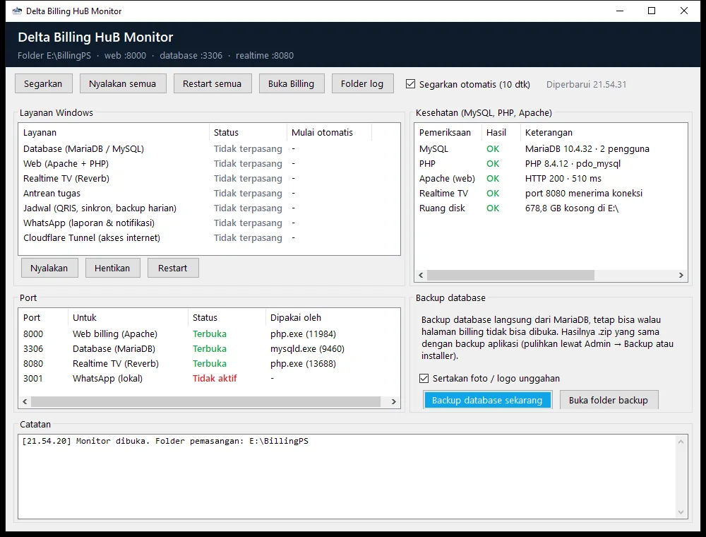
3 Login pertama
Di PC server: http://localhost · di tablet/HP: http://IP-PC-server
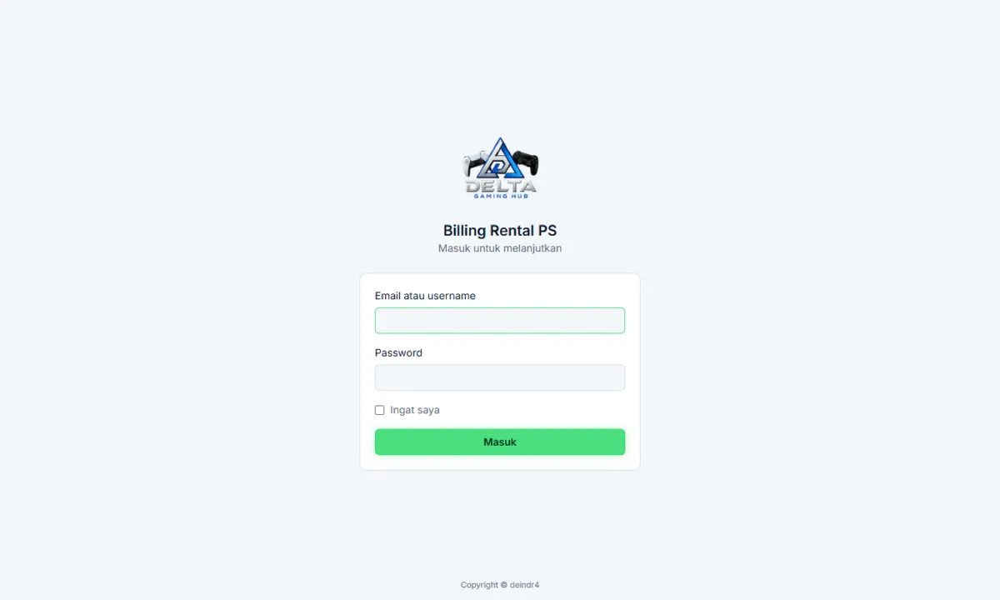
- Masuk dengan email & password owner.
- Bila rental punya lebih dari satu cabang, pilih cabang yang sedang dikelola.
- Aplikasi terbagi dua:
- Aplikasi Kasir — rental, POS F&B, pembayaran, kas laci (dipakai harian di tablet).
- Panel Admin — data master & pengaturan. Buka dari menu akun (kiri bawah) → Panel Admin, atau alamat
/admin.
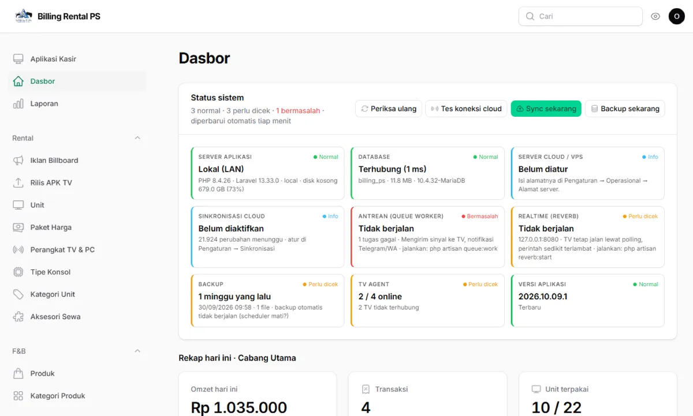
4 Logo, warna & tampilan
Admin → Pengaturan → Tampilan
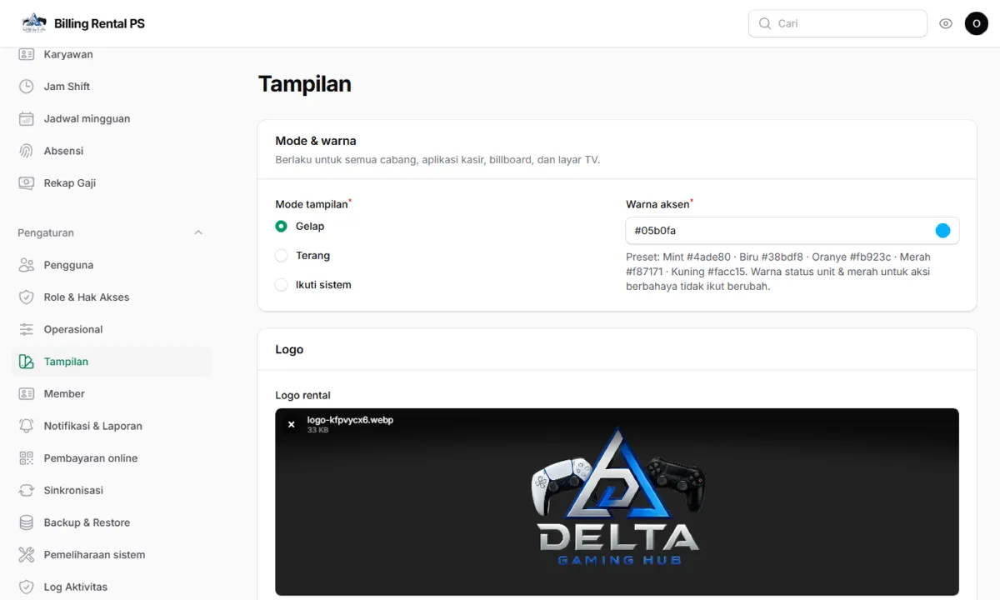
- Mode tampilan: Gelap, Terang, atau Ikuti sistem.
- Warna aksen: warna tombol utama (ada preset Mint, Biru, Oranye, Merah, Kuning). Warna status unit tidak ikut berubah.
- Logo rental: unggah logo (PNG transparan paling bagus).
- Opsional: teks tambahan di kaki aplikasi dan wallpaper layar kunci TV.
- Klik Simpan.
Nama rental & cabang diisi saat pemasangan (bab 2).
5 Tipe konsol (PS4, PS5, PC)
Admin → Rental → Tipe Konsol → Buat
Tipe konsol mengelompokkan unit yang tarifnya sama, misalnya PS4 dan PS5.
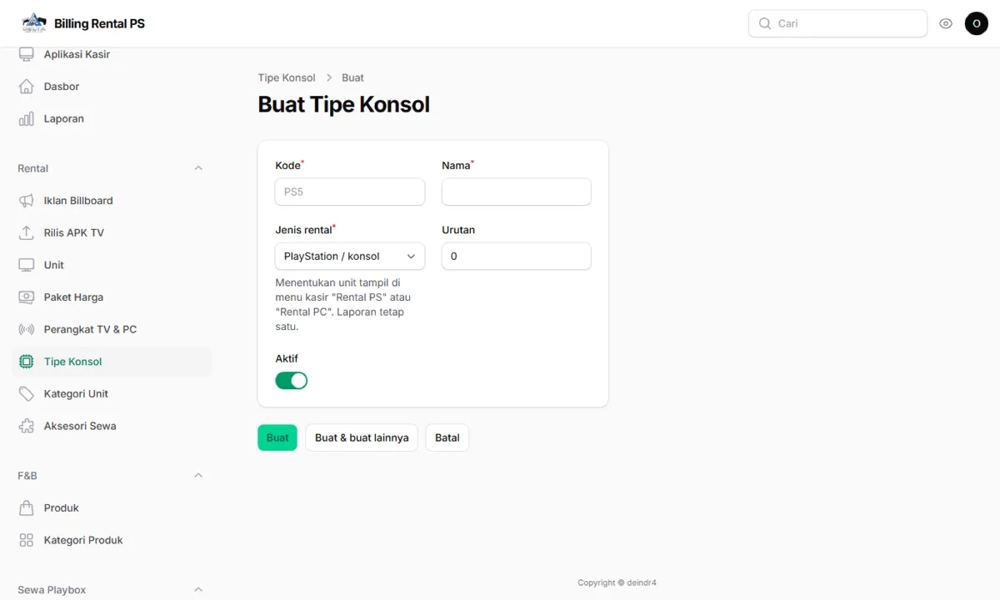
| Isian | Contoh | Keterangan |
|---|---|---|
| Kode | PS5 | Singkat, unik. |
| Nama | PlayStation 5 | Tampil di kartu unit. |
| Jenis rental | PlayStation / konsol | Pilih PC untuk komputer — unitnya tampil di menu kasir Rental PC. |
Klik Buat & buat lainnya untuk langsung menambah tipe berikutnya (mis. PS4).
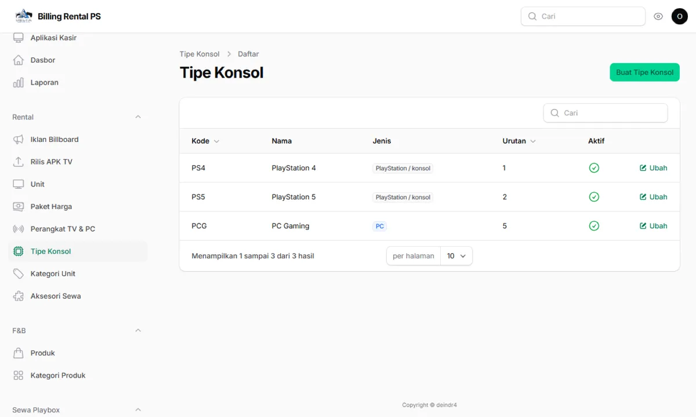
6 Paket harga
Admin → Rental → Paket Harga → Buat
Setiap tipe konsol butuh minimal satu tarif per jam. Paket durasi tetap (mis. 3 jam lebih murah) boleh ditambahkan.
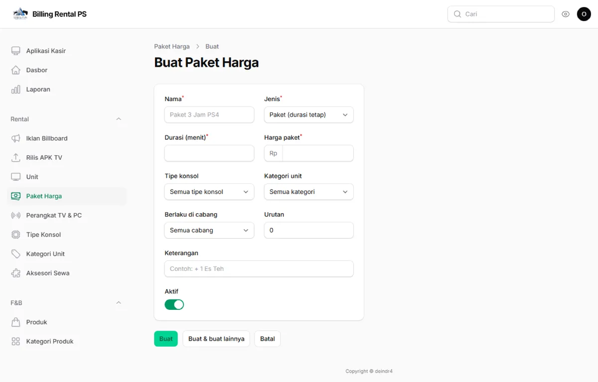
| Jenis | Isi | Contoh |
|---|---|---|
| Tarif per jam | Harga per jam. Dipakai untuk durasi bebas & open billing (dihitung proporsional per menit sesuai pengaturan). | PS4 · Rp8.000 / jam |
| Paket (durasi tetap) | Durasi (menit) + harga paket. | Paket 3 Jam PS4 · 180 menit · Rp20.000 |
- Pilih Tipe konsol (mis. PS4). Semua tipe konsol berarti berlaku untuk semua.
- Kategori unit — kosongkan, atau pilih VIP bila harga VIP berbeda.
- Berlaku di cabang — Semua cabang atau cabang tertentu.
- Keterangan opsional, mis. "+ 1 Es Teh".
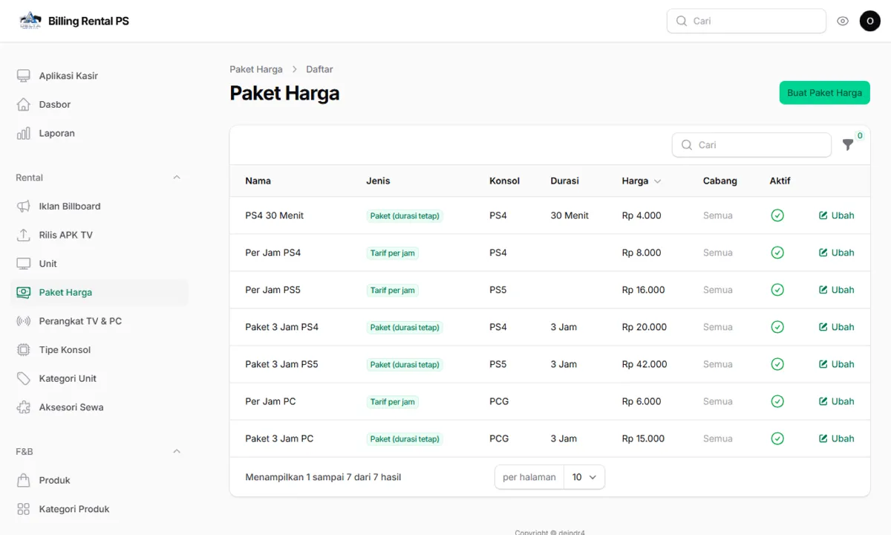
7 Unit (TV / meja)
Admin → Rental → Unit → Buat
Satu unit = satu TV / meja main yang disewakan.
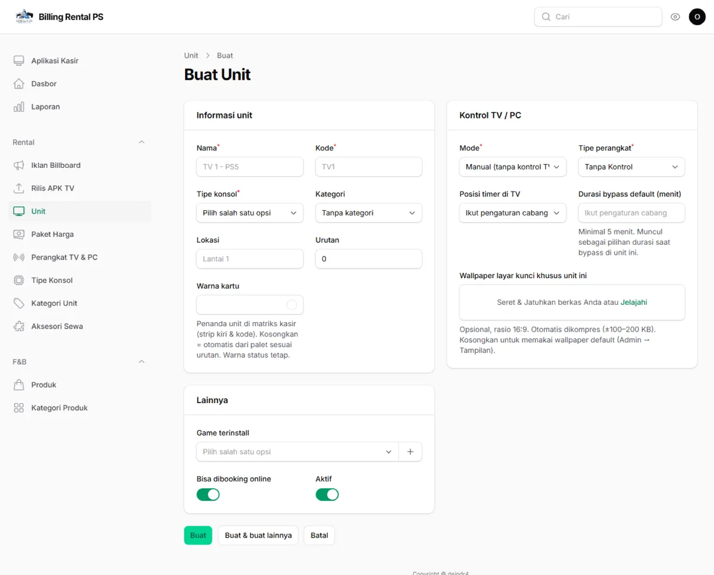
| Isian | Contoh | Keterangan |
|---|---|---|
| Nama | TV 1 - PS5 | Nama lengkap di struk & laporan. |
| Kode | TV1 | Tampil besar di kartu kasir. |
| Tipe konsol | PlayStation 5 | Menentukan tarif (bab 6). |
| Kategori | VIP | Opsional. |
| Lokasi, Urutan | Lantai 1, 1 | Urutan tampil di matriks kasir. |
| Warna kartu | (kosong) | Kosong = warna otomatis berbeda tiap unit. |
| Mode | Manual / TV Agent | Manual bila TV belum memakai aplikasi TV Agent. Ubah ke TV Agent setelah TV dipasangkan (bab 12). |
Gunakan Buat & buat lainnya untuk mengisi semua unit berurutan (TV1, TV2, …).
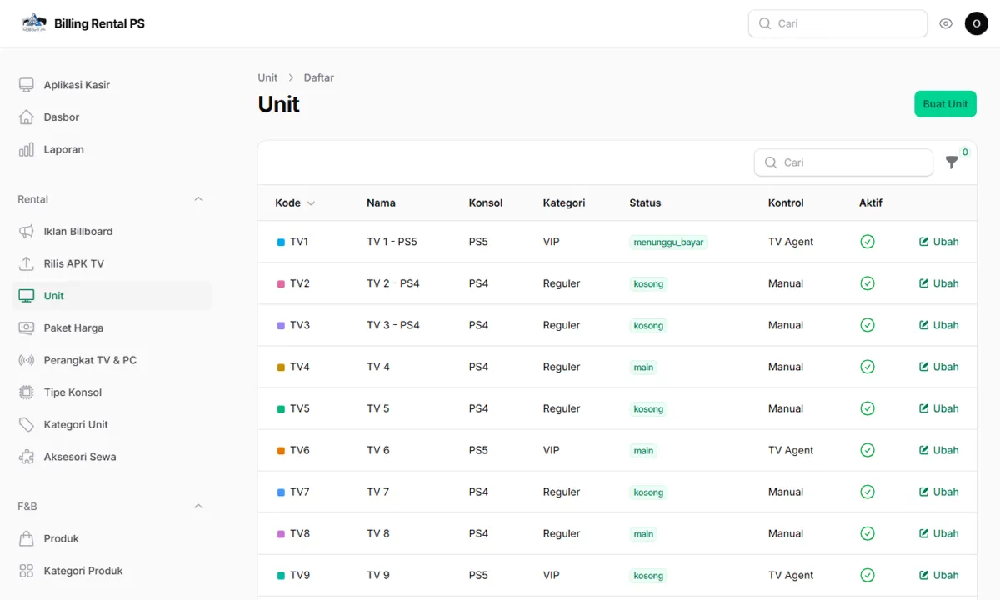
8 Menu F&B (produk)
Admin → F&B → Kategori Produk, lalu Produk
8a. Kategori produk
Buat kategori seperti Minuman, Makanan, Snack. Kategori menjadi tab di layar POS.
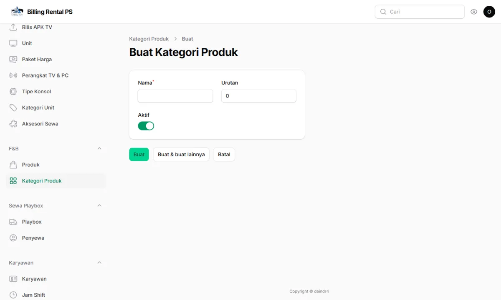
8b. Produk
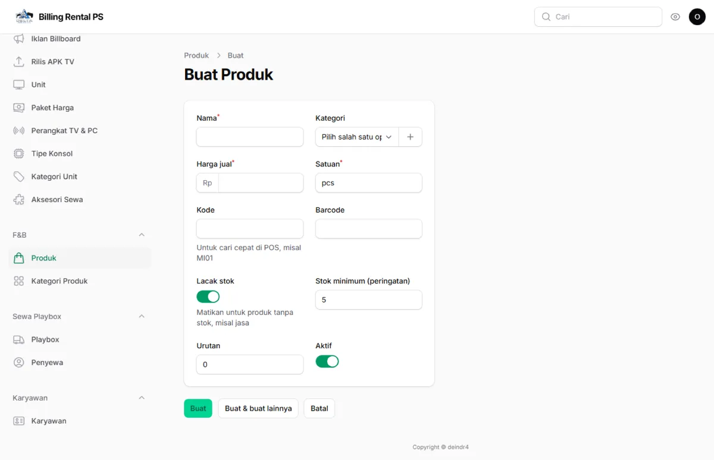
| Isian | Contoh | Keterangan |
|---|---|---|
| Nama | Indomie Goreng | |
| Kategori | Makanan | Tombol + membuat kategori baru langsung dari sini. |
| Harga jual | Rp7.000 | Harga ke pelanggan. |
| Satuan | pcs | pcs / gelas / porsi. |
| Kode | MI01 | Untuk cari cepat di POS. |
| Barcode | 8998866200301 | Opsional — POS bisa scan barcode. |
| Lacak stok | Aktif | Matikan untuk produk tanpa stok (jasa, es teh racikan bila tidak dihitung). |
| Stok minimum | 5 | Di bawah angka ini muncul peringatan "menipis". |
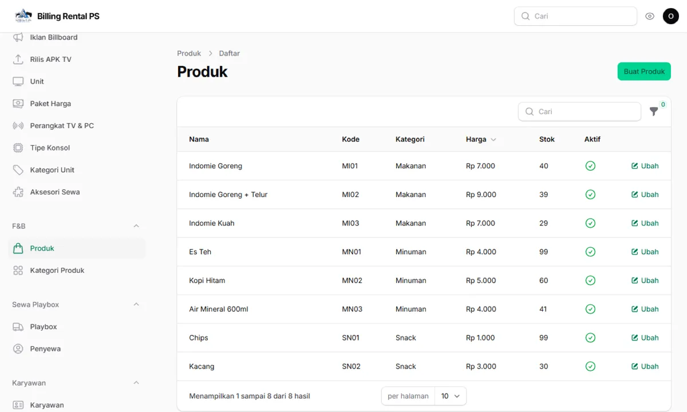
9 Stok awal F&B
Aplikasi Kasir → Operasional → Stok → tab Stok Masuk
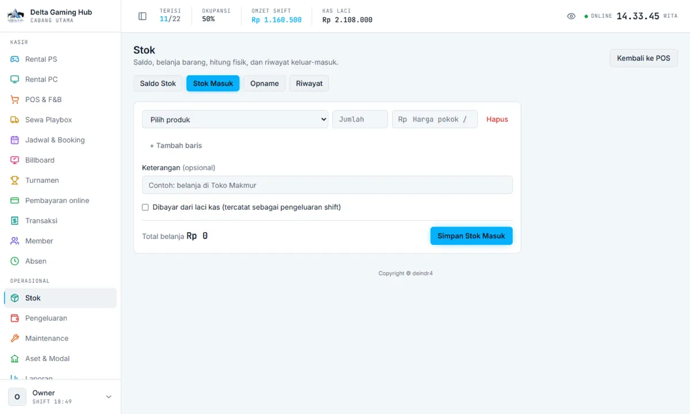
- Pilih produk, isi jumlah dan harga pokok / satuan (harga beli).
- + Tambah baris untuk produk lain dalam satu belanja.
- Centang Dibayar dari laci kas hanya bila uangnya diambil dari laci kasir hari itu (tercatat sebagai pengeluaran shift). Untuk stok awal, biarkan tidak dicentang.
- Simpan Stok Masuk.
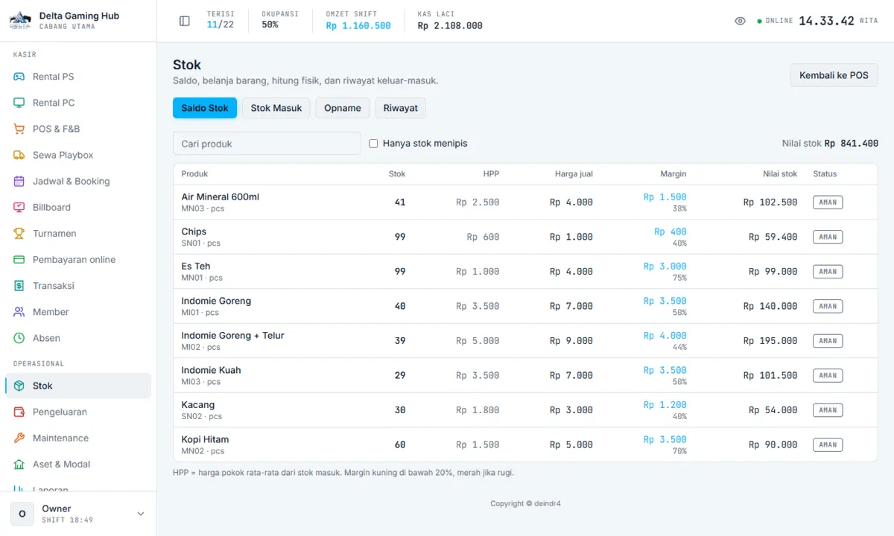
10 Akun kasir & PIN
Admin → Pengaturan → Pengguna → Buat
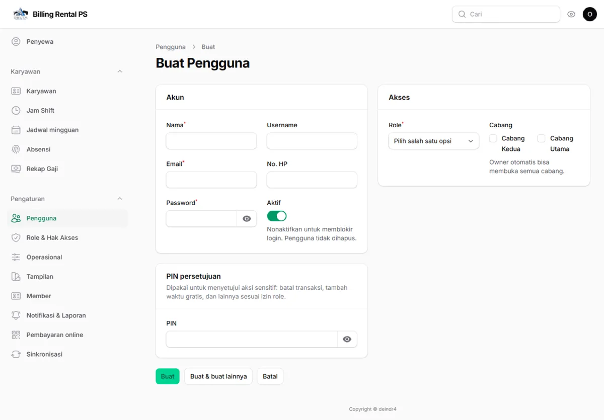
- Isi nama, username (untuk login cepat di tablet), email & password.
- Role:
Role Untuk Kasir Rental, POS, terima bayar, buka/tutup kas. Tidak bisa membatalkan transaksi tanpa PIN atasan. Supervisor Seperti kasir + menyetujui aksi dengan PIN, masuk panel admin data master. Teknisi Maintenance unit & akses staf di TV. - Centang cabang tempat ia bekerja.
- PIN — dipakai saat serah terima laci dan absensi; untuk supervisor juga untuk menyetujui aksi sensitif.
11 Pengaturan operasional
Admin → Pengaturan → Operasional
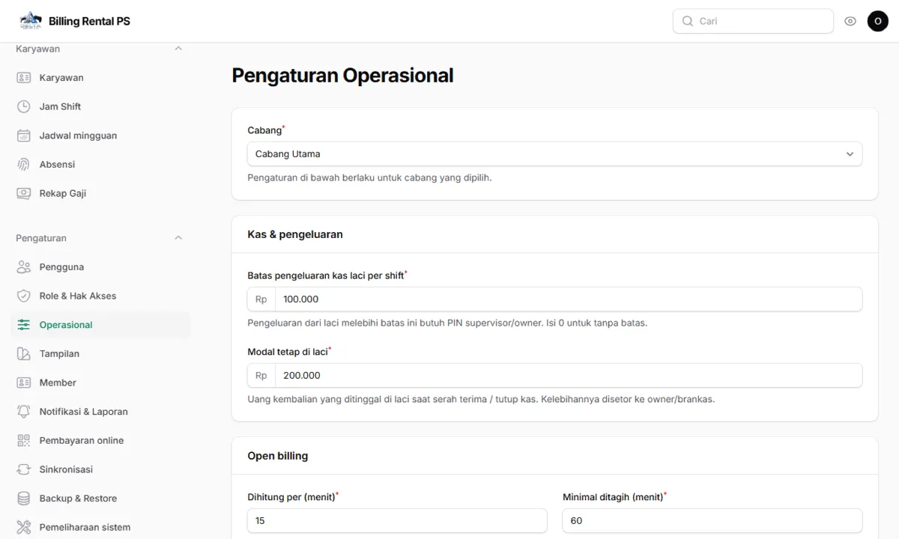
Periksa minimal:
- Kas & pengeluaran — batas pengeluaran kas laci per shift tanpa PIN, dan modal tetap di laci (uang kembalian yang selalu ditinggal saat serah terima / tutup kas).
- Open billing — dihitung per berapa menit, minimal ditagih, dan aturan pembulatan.
- Sesi & TV — peringatan sisa waktu, waktu pilih game, batal sesi tanpa PIN, tampilan timer di TV.
- Struk — lebar kertas printer, teks tambahan di kepala dan teks penutup.
- Jam operasional & QRIS bila dipakai.
Pembayaran online, WhatsApp & laporan otomatis, serta member & poin ada di menu Pengaturan lainnya — bisa diatur belakangan.
12 Hubungkan TV (opsional)
Di TV Android / Google TV + Admin → Rental → Perangkat TV & PC
Dengan aplikasi TV Agent, TV terkunci saat tidak ada sesi, menampilkan timer & tagihan, dan bisa dikontrol dari kartu unit (volume, matikan layar, pemberitahuan). Tanpa TV Agent, billing tetap jalan (mode Manual).
- Di TV, pasang aplikasi Downloader dari Play Store, lalu buka alamat
http://IP-PC-server/apk→ pasang TV Agent. - Buka TV Agent → isi alamat server (
http://IP-PC-server) → TV menampilkan kode pairing. - Di Admin → Perangkat TV & PC → Pasangkan TV / PC → masukkan kode → pilih unit.
- Ubah unit itu ke mode TV Agent (bab 7). Indikator TV online muncul di kartu kasir.
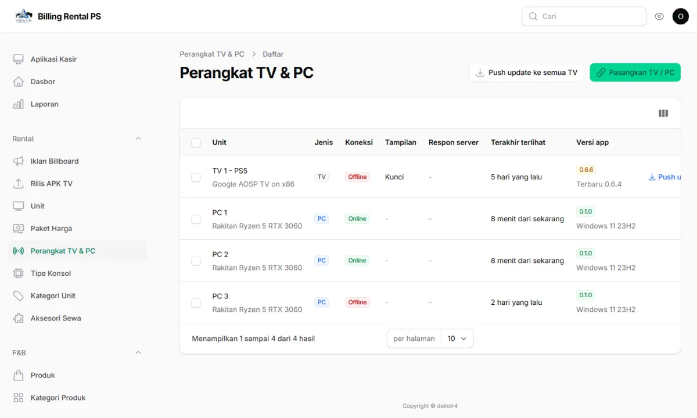
tv-agent/README.md di GitHub.13 Hari pertama: shift, rental, F&B, bayar
Aplikasi Kasir (tablet / HP / PC)
13a. Buka shift (kas laci)
Saat kasir login dan belum ada shift, aplikasi membuka halaman Buka Shift: hitung uang di laci, isi kas awal, klik Buka. Satu cabang = satu laci; kasir berikutnya menerima laci lewat Serah Terima (menu akun), bukan membuka shift baru.
13b. Matriks unit
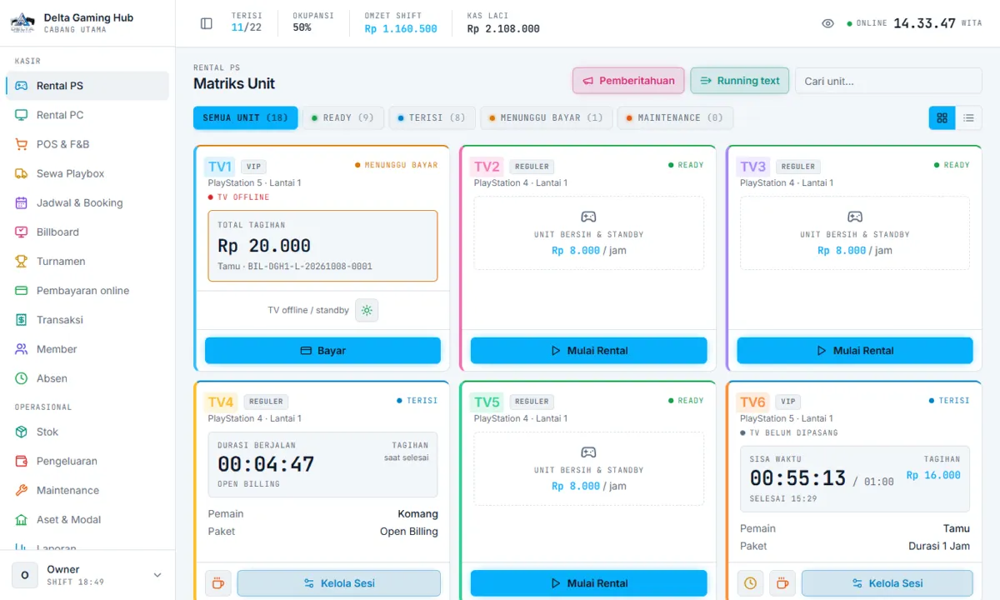
13c. Mulai rental
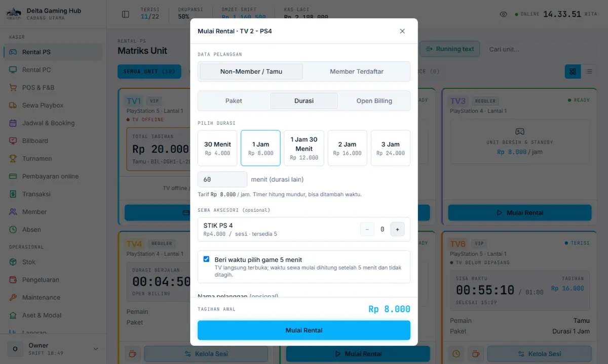
- Pilih Tamu atau Member.
- Pilih cara tagih: Paket (durasi tetap dari bab 6), Durasi (pilih/ketik menit, timer hitung mundur) atau Open Billing (timer berjalan, dibayar saat selesai).
- Opsional: sewa aksesori, waktu pilih game (tidak ditagih), nama pelanggan.
- Klik Mulai Rental. Tagihan awal tampil di bawah; TV (bila terhubung) langsung terbuka.
13d. Kelola sesi
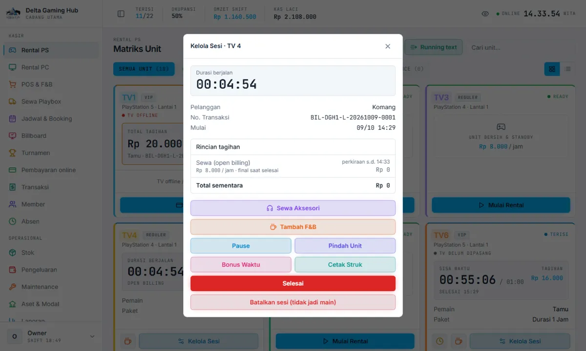
Mode paket/durasi: ikon jam di kartu untuk tambah waktu. Klik Selesai saat pelanggan berhenti — unit berubah menjadi Menunggu Bayar.
13e. Jual F&B
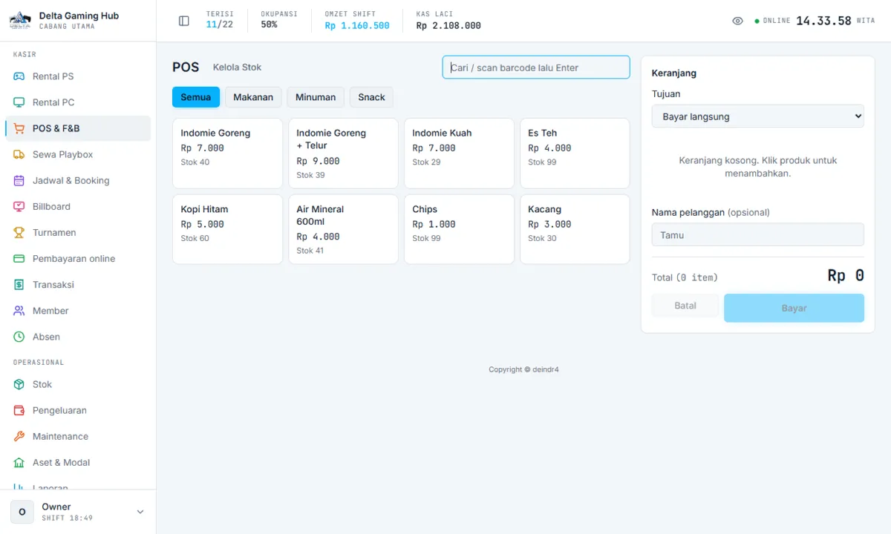
Dari kartu unit, ikon cangkir membuka POS yang sudah terhubung ke unit tersebut.
13f. Bayar
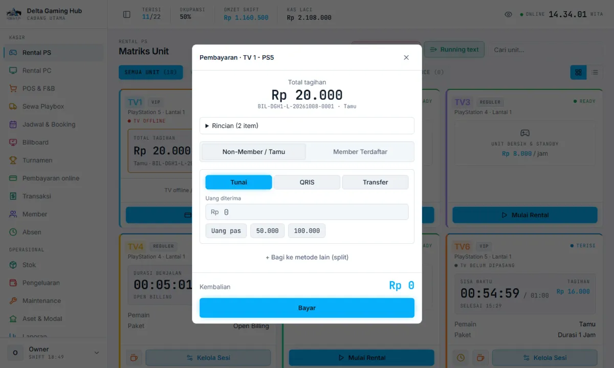
Setelah bayar, struk bisa dicetak ke printer Bluetooth atau dikirim lewat WhatsApp. Semua transaksi ada di menu Transaksi.
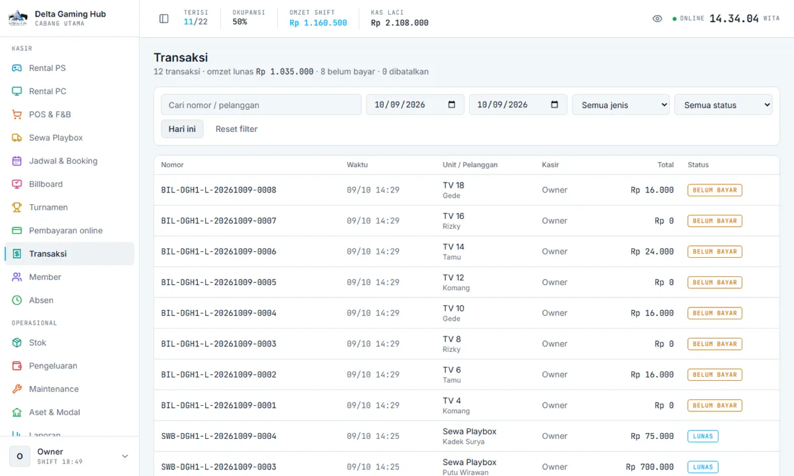
14 Tutup kas & laporan
Menu akun → Tutup Kas · Operasional → Laporan
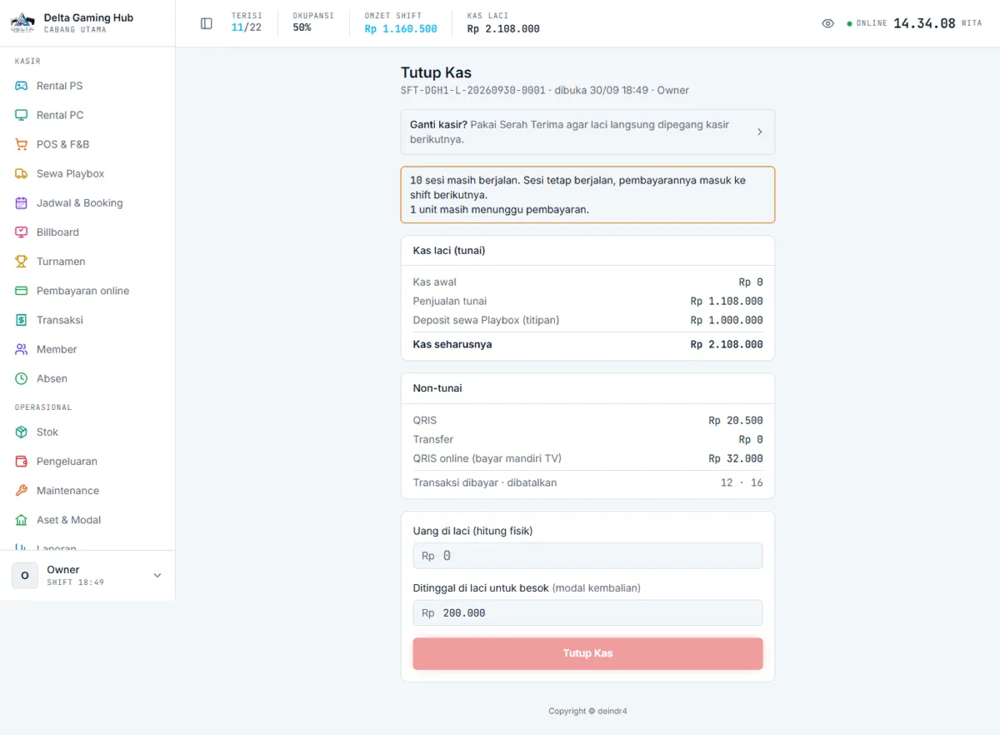
- Sesi yang masih berjalan tidak terganggu — pembayarannya masuk ke shift berikutnya.
- Hitung uang di laci, ketik di Uang di laci (hitung fisik). Selisih kurang/lebih tercatat otomatis.
- Isi uang yang ditinggal di laci untuk besok; sisanya setoran.
- Tutup. Laporan shift bisa dicetak / dikirim ke owner.
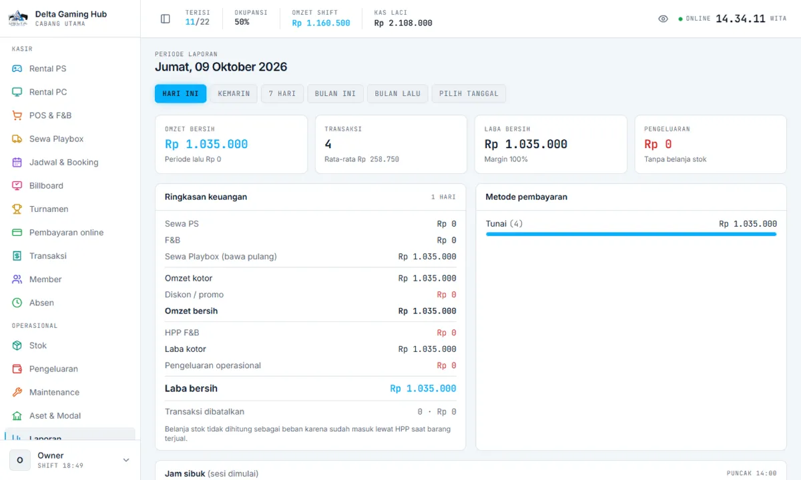
15 Backup & update
Admin → Pengaturan → Backup & Restore dan Pemeliharaan sistem
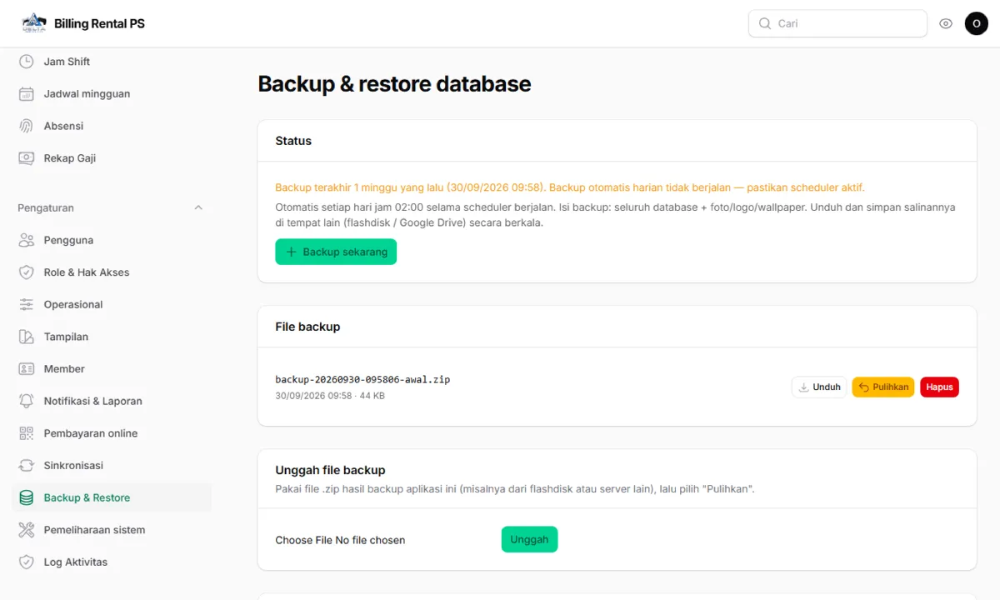
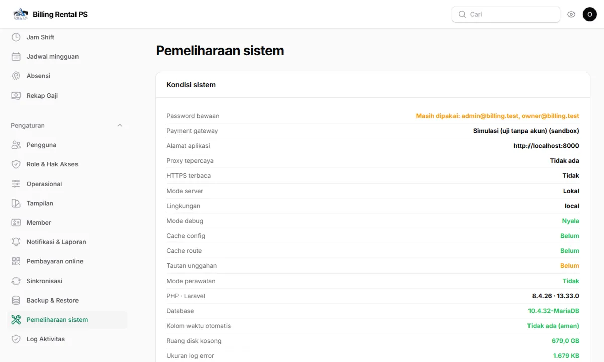
Backup
- Backup berjalan otomatis setiap hari jam 02:00 (database + foto/logo/wallpaper), disimpan di
C:\BillingPS\data\storage\app\private\backup. PC harus menyala pada jam itu. - Bila status berwarna kuning "Backup otomatis harian tidak berjalan", buka ikon
Delta Billing HuB Monitor di Desktop dan pastikan
BillingPS-Jadwalberjalan. - Seminggu sekali unduh backup terbaru ke flashdisk / Google Drive — bila hard disk rusak, data bisa dipulihkan dengan installer (pilih Pulihkan dari file backup).
Update ke versi baru
- Aplikasi memberi tahu bila ada versi baru (dasbor admin). Unduh
BillingPS-Setup-<versi>.exeterbaru. - Jalankan di PC server yang sama → Next sampai selesai. Wizard isian dilewati; data & pengaturan tetap. Billing berhenti ±2–5 menit, sesi & timer TV tetap berjalan.
- Buka Pemeliharaan sistem: Backup dulu → Update database → Pasang ulang trigger sinkron → Optimalkan → Restart antrean & realtime.
16 Masalah umum
| Gejala | Penyebab & solusi |
|---|---|
Tablet tidak bisa membuka http://IP-PC |
Tablet beda jaringan / Wi-Fi tamu; IP PC berubah (buat IP tetap, bab 1); port web bukan 80 → tambahkan :PORT. |
| Lupa password owner | PowerShell Administrator:
cd C:\BillingPS\app
..\runtime\php\php.exe artisan tinker --execute="App\Models\User::withoutGlobalScopes()->where('email','EMAIL')->update(['password'=>bcrypt('PasswordBaru123')]);" |
| Aplikasi tidak terbuka setelah PC restart | Buka Delta Billing HuB Monitor di Desktop → Nyalakan semua. Belum bisa? Klik Backup database
dulu, lalu lihat log di C:\BillingPS\logs. |
| Port 80 dipakai program lain (IIS, Skype lama) | Jalankan installer lagi dan pilih port lain (mis. 8000), lalu buka http://IP-PC:8000. |
| TV "offline" | TV standby / Wi-Fi putus. Tekan tombol Bangunkan di kartu unit, cek alamat server di TV Agent sama dengan IP PC. |
| Unit tidak muncul di kasir | Unit tidak aktif, atau tipe konsolnya berjenis PC (lihat menu Rental PC), atau filter status masih aktif. |
| "Tarif belum diatur" di kartu unit | Belum ada paket Tarif per jam untuk tipe konsol / kategori unit itu (bab 6). |
docs.